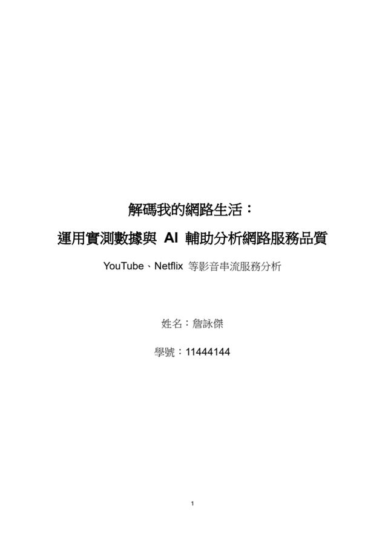

點此觀看影片 ↗
2026 / 04
英文聽力報告
在英文聽力課程中，我以錄影口頭報告的方式，介紹平時使用的 AI 工具，以及如何運用這些工具練習英文聽力與口說。透過準備與錄製報告，我進一步了解不同工具的使用方式，也學習依照自己的需求選擇適合的輔助方法，讓語言學習更有方向。
觀看報告影片目前就讀中原大學資訊管理學系二年級。我的個性平和，喜歡挑戰未知的事物，面對困難時不輕易放棄，願意透過反覆練習與嘗試找到解決方法。
在學習過程中，我接觸程式設計、網頁製作與文書處理，也嘗試將課堂所學運用在生活中。目前仍在探索未來的方向，希望透過不同的課程與實作，逐步找到自己的興趣與目標。
以下為目前各項技能的自評熟練程度。
2026 / 04
在英文聽力課程中，我以錄影口頭報告的方式，介紹平時使用的 AI 工具，以及如何運用這些工具練習英文聽力與口說。透過準備與錄製報告，我進一步了解不同工具的使用方式，也學習依照自己的需求選擇適合的輔助方法，讓語言學習更有方向。
觀看報告影片2023 / 09
為了考取電腦軟體應用丙級技術士證照，我在準備期間反覆練習文書操作與版面編排，持續修正操作上的問題。透過這段練習，我逐漸熟悉軟體的各項功能與應用，也培養了耐心與細心，讓這些能力能運用在日後的課堂報告與資料整理中。
查看證照
2026 / 06
在「解碼我的網路生活」專案中，我將企業資料通訊課程所學與日常影音串流的使用情境結合，整理網路服務品質的觀察與測試結果。透過報告製作，我更了解平常不會留意的網路結構與運作方式，也學會比較數據、思考不同因素造成的影響，將課本知識連結到實際生活。
閱讀完整報告（PDF）歡迎透過以下方式與我聯絡。